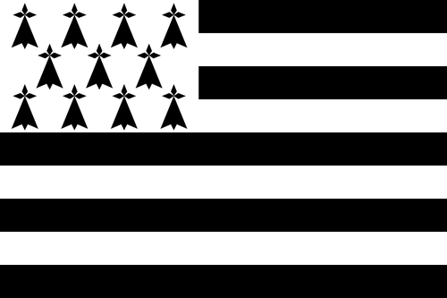

AUJOURD’HUI
Prises de service

— / —
services validés
Ouvrir les prises de service →
TABLEAU DE BORD D’EXPLOITATION
Chargement de la date…

Valider les prises de service et suivre les courses en circulation comme sur un tableau de gare.
Rechercher les arrêts, créer des itinéraires, ouvrir le GPS et lancer le SAE personnel.
Entrer dans BreizhStops →